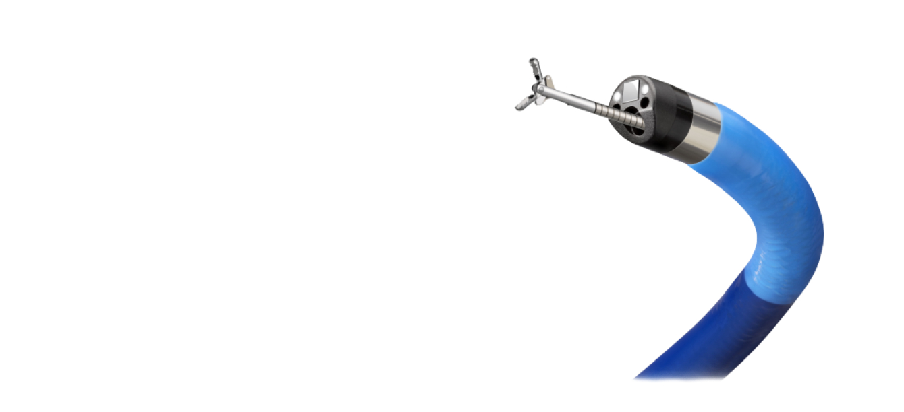
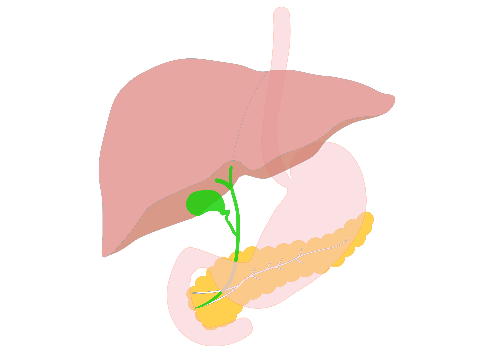

もどる
もどる2021.5
start

これまでの胆管病変診断
食道・胃・十二指腸や小腸・大腸の上下部消化管領域においては、内視鏡による直接観察と直視下生検による診断法は確立しており、様々な治療も行われています。一方、同じ管でも「胆管」は十二指腸乳頭に開口し、狭い内腔と複雑な形態を呈しています。そのため胆管病変診断の中心は、CT・MRIなどの間接的画像検査や、内視鏡的逆行性膵胆管造影法（ERCP）による直接胆道造影と透視下生検でした。従来、胆管内を直接観察することが出来る経口胆道鏡も存在しました。しかし使用には二人の内視鏡医が必要で視野が狭く、操作性にやや難がありました。また耐久性にも問題があり故障時には修理期間を要するため、手軽に施行出来る検査ではありませんでした。

Spy Glass™ DS システム
近年デジタル胆道鏡であるSpy GlassTMDSが開発されました。術者一人での操作が可能であり操作性に優れ視野が広く比較的簡便に胆管内を直接観察し、アプローチすることが可能となりました。
大結石や嵌頓結石等、治療困難胆管結石に対する治療にも活用
Spy GlassTM DS システムを導入し、胆管内の大結石や嵌頓結石等、治療困難胆管結石に対する治療にも活用しています。Spy GlassTM DSで治療困難胆管結石を観察しながら電気水圧衝撃波結石破砕療法（electrohydraulic lithotripsy : EHL）を併用し、結石の破砕および完全除去を行っています。SpyGlassTM DSを膵管内を観察する経口膵管鏡として使用することも可能です。ただし膵管は胆管より細く屈曲・蛇行しているため、経口膵管鏡を行うには主膵管径がSpy GlassTM DS（外径3.6mm）を挿入出来る程度に拡張している必要があります。
Spy Glass™ DSの適応
| 診断 |
|
|---|---|
| 治療 |
|